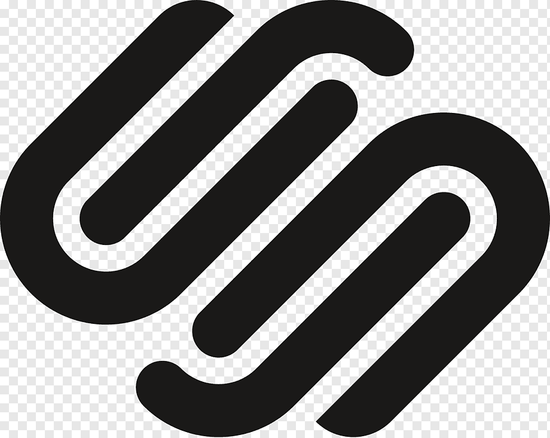

Manejadores de Contenido: imagen, audio y video
Es un sofware diseñada parar facilitar la creación de páginas webs estaticas.
Word Press
- Programas en creacion de Blocs.
- Herramientas para la creacion de paginas webs comerciales.

Joomla
- Es un sistema de gestion de contenidos que permite desarrollar sitios webs.
- Permite CRUD de contenidos para desarrollar un sitio atraves del panel de administrador.

Drupal
- Es un sistema de gestion de contenidos (CMS).
- Modular multipropiedad y configurable.
- Permite publicar articulos, imagenes, archivos y otros servicios como foros, encuestas, votaciones, blocs, administracion de usuarios y permisos.

Sqcuares Space
- Es un sistema (CMS).
- Crear itios webs de diferentes tipos como: blocs o portafolios.

Moodle
- Es un software de codigo abierto.
- No se paga licencia.
- Crea perfiles de estudiantes, profesores y administradores.